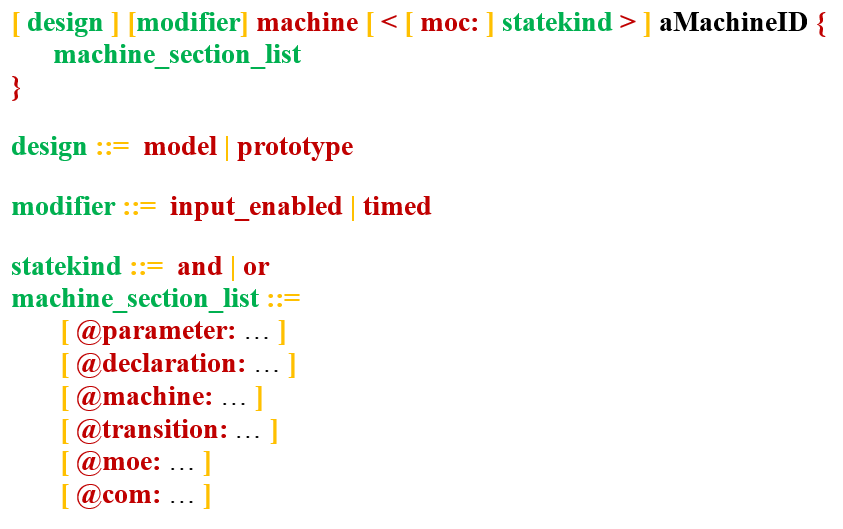

The machine is the basic component on which XLIA relies. A machine is entirely defined by the set of sections that it implements. To declare a machine in XLIA, we must use the following syntax (see BNF syntax) :
The "design" field can be filled by one and only one the following keywords :
If we leave the field blank, the default value "prototype" is taken.
See "design" for an explanation.
The "modifier" field can be left blank or be filled by any combination of the following keywords :
Those define additional properties for the machine we declare.
See "modifier" for an explanation.
The "type of machine" field is mandatory. We can use one and only one of the following keywords :
See "type of machine" for an explanation.
The "model of computation" field which we shorten to "moc" can be filled by one and only one of the following keywords :
If we leave the field blank, the default value "or" is taken.
See "moc" for an explanation.
In this field, you can enter the name of the machine you declare. In XLIA, names must follow some rules to avoid errors. You can see those rules here : naming conventions.
Like in C++ or Java, in XLIA we implement the contents of the object we've declared in a section delimited by brackets just after the object declaration.
As we've seen in the overview, XLIA can be considered to be a "Declarative Language". In the body of the machine, we won't write any methods or functions, we'll only declare the existence of all the machine's sub-components. Those declarations are made following a certain logic. We group together sub-components of the same type in lists.
Those lists form sections that must be delimited by keywords using the syntax "@XXX:" where "XXX" is associated with a certain type of sub-component. See the sections dictionary for further details.
The machine is characterized by this list of sections. In order to preserve consistency and to facilitate syntactic and semantics analyzes, it is crucial to respect the following precedence order in the declaration of these sections :
Remark : machines of type "state" don't use sections so what's above doesn't apply in this case.